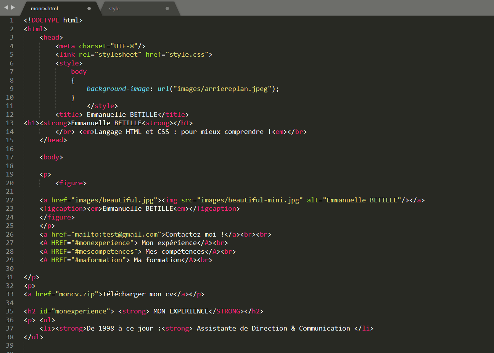
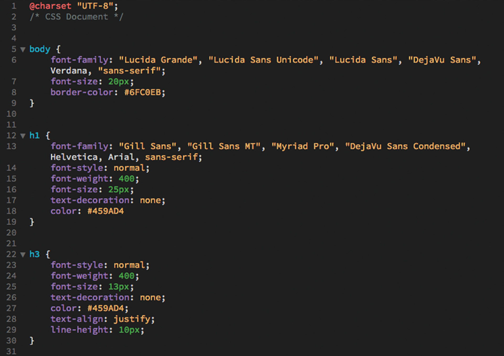

HTML
Le HyperText Markup Language, généralement abrégé HTML ou, dans sa dernière version, HTML5, est le langage de balisage conçu pour représenter les pages web. Ce langage permet d’écrire de l’hypertexte (d’où son nom), de structurer sémantiquement une page web, de mettre en forme du contenu, de créer des formulaires de saisie ou encore d’inclure des ressources multimédias dont des images, des vidéos, et des programmes informatiques. L'HTML offre également la possibilité de créer des documents interopérables avec des équipements très variés et conformément aux exigences de l’accessibilité du web. Il est souvent utilisé conjointement avec le langage de programmation JavaScript et des feuilles de style en cascade (CSS). HTML est inspiré du Standard Generalized Markup Language (SGML). Il s'agit d'un format ouvert. L’anglais « Hypertext Markup Language » se traduit littéralement en « langage de balisage d’hypertexte »1. On utilise généralement le sigle « HTML », parfois même en répétant le mot « langage » comme dans « langage HTML ». Hypertext est parfois écrit HyperText pour marquer le T du sigle HTML. Le public non averti parle parfois de HTM au lieu de HTML, HTM étant l’extension de nom de fichier tronquée à trois lettres, une limitation que l’on trouve sur d’anciens systèmes d’exploitation de Microsoft.
Durant la première moitié des années 1990, avant l’apparition des technologies Web comme le langage JavaScript (JS), les feuilles de style en cascade (CSS) et le Document Object Model (DOM), l’évolution de HTML a dicté l’évolution du World Wide Web. Depuis la création de l'HTML 4 en 1997, l’évolution de HTML a fortement ralenti ; dix ans plus tard, HTML 4 reste utilisé dans les pages web. En 2008, la spécification du HTML5 est à l’étude2 et devient d'usage courant dans la seconde moitié des années 2010. HTML est une des trois inventions à la base du World Wide Web, avec le Hypertext Transfer Protocol (HTTP) et les adresses web (URL). HTML a été inventé pour permettre d'écrire des documents hypertextuels liant les différentes ressources d’Internet avec des hyperliens. Aujourd’hui, ces documents sont appelés « page web ». En août 1991, lorsque Tim Berners-Lee annonce publiquement le web sur Usenet, il ne cite que le langage Standard Generalized Markup Language (SGML), mais donne l’URL d’un document de suffixe .html.

Dans son livre Weaving the web3, Tim Berners-Lee décrit la décision de baser HTML sur SGML comme étant aussi « diplomatique » que technique : techniquement, il trouvait SGML trop complexe, mais il voulait attirer la communauté hypertexte qui considérait que SGML était le langage le plus prometteur pour standardiser le format des documents hypertexte. En outre, SGML était déjà utilisé par son employeur, l’Organisation européenne pour la recherche nucléaire (CERN). ; Les premiers éléments du langage HTML comprennent : le titre du document, les hyperliens, la structuration du texte en titres, sous-titres, listes ou texte brut, un mécanisme rudimentaire de recherche par index. La description de HTML est alors assez informelle et principalement définie par le support des divers navigateurs web contemporains. Dan Connolly a aidé à faire de HTML une véritable application de SGML4.
CSS

Les feuilles de style en cascade1, généralement appelées CSS de l'anglais Cascading Style Sheets, forment un langage informatique qui décrit la présentation des documents HTML et XML. Les standards définissant CSS sont publiés par le World Wide Web Consortium (W3C). Introduit au milieu des années 1990, CSS devient couramment utilisé dans la conception de sites web et bien pris en charge par les navigateurs web dans les années 2000. Le concept de feuille de style est présent dès l'origine du World Wide Web : le premier navigateur web WorldWideWeb permet de mettre en forme les documents à l'aide de ce qui serait aujourd'hui considéré comme une « feuille de style utilisateur »2. De même, les navigateurs Viola en 1992 et Harmony en 1993 recourent à un mécanisme similaire permettant de déterminer le rendu des polices de caractères, des couleurs ou de l'alignement du texte. Il ne s'agit cependant pas de styles déterminés par l'auteur du document. HTML ne comportant pas non plus d'éléments de présentation dans ses premières années, une pression croissante s'exerce alors pour que les navigateurs permettent aux auteurs de déterminer eux-mêmes la présentation des pages web3, dans une démarche issue de la publication imprimée électronique.
C'est dans ce contexte, en 1994-1995, que le tout nouveau Netscape Navigator introduit les premiers éléments HTML de présentation à l'initiative de Marc Andreessen, tandis qu'apparaissent concurremment les premières propositions de styles externesn. 1 : le « stylesheet proposal » de Pei Wei (créateur de Viola)4, les « Stylesheets for HTML » de Robert Raisch (O'Reilly)5, les « Cascading HTML Style Sheets » (CHSS) d'Håkon Wium Lie6. L'apparition de CSS répond à une volonté de « proposer une alternative à l'évolution du HTML d'un langage de structuration vers un langage de présentation »7. Une troisième voie de développement est également ouverte à la même époque : le langage de transformation DSSSL des documents SGML, élaboré par James Clark, suggère la possibilité d'un langage de styles qui ne soit pas seulement descriptif, et se rapproche d'un véritable langage de programmationn. 2. Cette voie est suivie par Netscape, qui propose en 1996 au W3C les « JavaScript-Based Style Sheets » (JSSS)8, implémentées par Netscape Navigator 4 en 1997. Les origines des CSS sont donc liées à trois possibilités majeures : HTML est-il un langage de structuration ou un langage mixte de mise en forme et de structuration ?

Les origines des CSS sont donc liées à trois possibilités majeures : HTML est-il un langage de structuration ou un langage mixte de mise en forme et de structuration ? Les choix de présentation de l'auteur doivent-ils avoir la primauté sur ceux de l'utilisateur ? La réponse aux besoins est-elle un langage de description de la mise en forme ou un langage de transformation ? La première proposition de Cascading HTML Style Sheets formulée par Håkon Wium Lie retient l'attention de Dave Raggett, qui est alors le principal éditeur du projet de spécification HTML 3.09. Partisan d'un HTML purement structurel, il encourage la publication d'un document de travail CHSS, afin que celui-ci puisse être présenté et discuté à la seconde conférence internationale sur le WWW (Mosaic and the Web, Chicago, 1994). Il modifie également avec Håkon Lie le navigateur Arenan. 3, afin de permettre de tester ce langage, et en fait la démonstration lors de la troisième conférence WWW en 1995.
JavaScript

Les feuilles de style en cascade1, généralement appelées CSS de l'anglais Cascading Style Sheets, forment un langage informatique qui décrit la présentation des documents HTML et XML. Les standards définissant CSS sont publiés par le World Wide Web Consortium (W3C). Introduit au milieu des années 1990, CSS devient couramment utilisé dans la conception de sites web et bien pris en charge par les navigateurs web dans les années 2000. Le concept de feuille de style est présent dès l'origine du World Wide Web : le premier navigateur web WorldWideWeb permet de mettre en forme les documents à l'aide de ce qui serait aujourd'hui considéré comme une « feuille de style utilisateur »2. De même, les navigateurs Viola en 1992 et Harmony en 1993 recourent à un mécanisme similaire permettant de déterminer le rendu des polices de caractères, des couleurs ou de l'alignement du texte. Il ne s'agit cependant pas de styles déterminés par l'auteur du document. HTML ne comportant pas non plus d'éléments de présentation dans ses premières années, une pression croissante s'exerce alors pour que les navigateurs permettent aux auteurs de déterminer eux-mêmes la présentation des pages web3, dans une démarche issue de la publication imprimée électronique.
C'est dans ce contexte, en 1994-1995, que le tout nouveau Netscape Navigator introduit les premiers éléments HTML de présentation à l'initiative de Marc Andreessen, tandis qu'apparaissent concurremment les premières propositions de styles externesn. 1 : le « stylesheet proposal » de Pei Wei (créateur de Viola)4, les « Stylesheets for HTML » de Robert Raisch (O'Reilly)5, les « Cascading HTML Style Sheets » (CHSS) d'Håkon Wium Lie6. L'apparition de CSS répond à une volonté de « proposer une alternative à l'évolution du HTML d'un langage de structuration vers un langage de présentation »7. Une troisième voie de développement est également ouverte à la même époque : le langage de transformation DSSSL des documents SGML, élaboré par James Clark, suggère la possibilité d'un langage de styles qui ne soit pas seulement descriptif, et se rapproche d'un véritable langage de programmationn. 2. Cette voie est suivie par Netscape, qui propose en 1996 au W3C les « JavaScript-Based Style Sheets » (JSSS)8, implémentées par Netscape Navigator 4 en 1997. Les origines des CSS sont donc liées à trois possibilités majeures : HTML est-il un langage de structuration ou un langage mixte de mise en forme et de structuration ?
Les origines des CSS sont donc liées à trois possibilités majeures : HTML est-il un langage de structuration ou un langage mixte de mise en forme et de structuration ? Les choix de présentation de l'auteur doivent-ils avoir la primauté sur ceux de l'utilisateur ? La réponse aux besoins est-elle un langage de description de la mise en forme ou un langage de transformation ? La première proposition de Cascading HTML Style Sheets formulée par Håkon Wium Lie retient l'attention de Dave Raggett, qui est alors le principal éditeur du projet de spécification HTML 3.09. Partisan d'un HTML purement structurel, il encourage la publication d'un document de travail CHSS, afin que celui-ci puisse être présenté et discuté à la seconde conférence internationale sur le WWW (Mosaic and the Web, Chicago, 1994). Il modifie également avec Håkon Lie le navigateur Arenan. 3, afin de permettre de tester ce langage, et en fait la démonstration lors de la troisième conférence WWW en 1995.